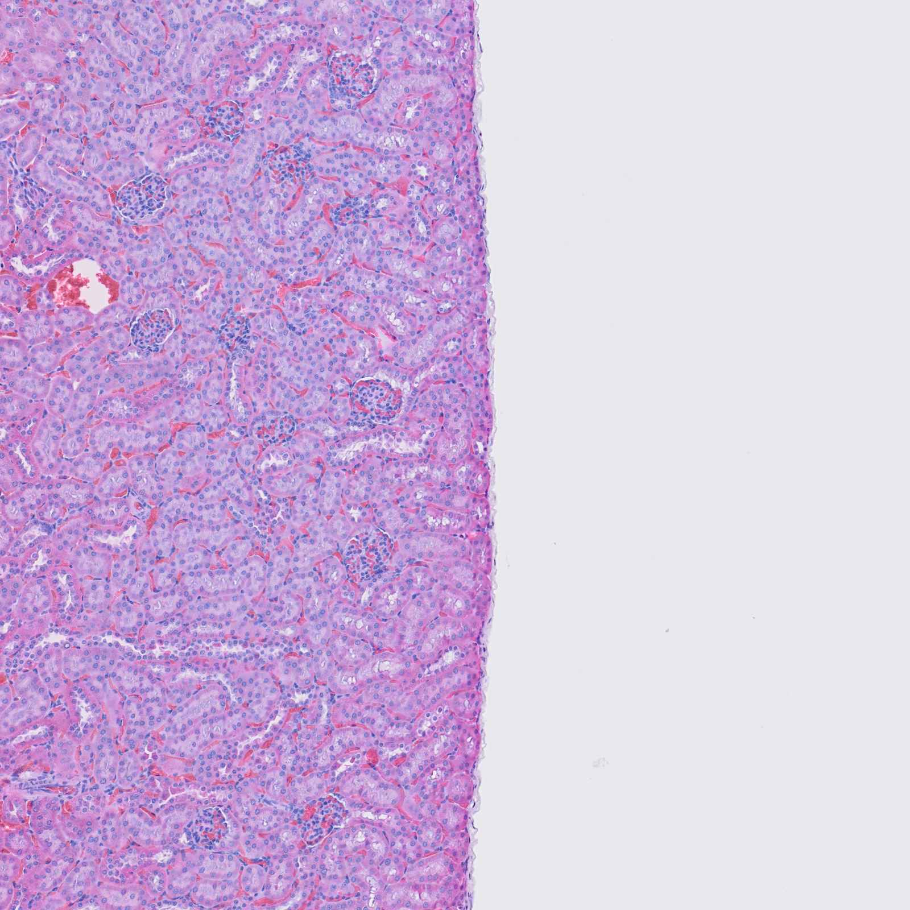
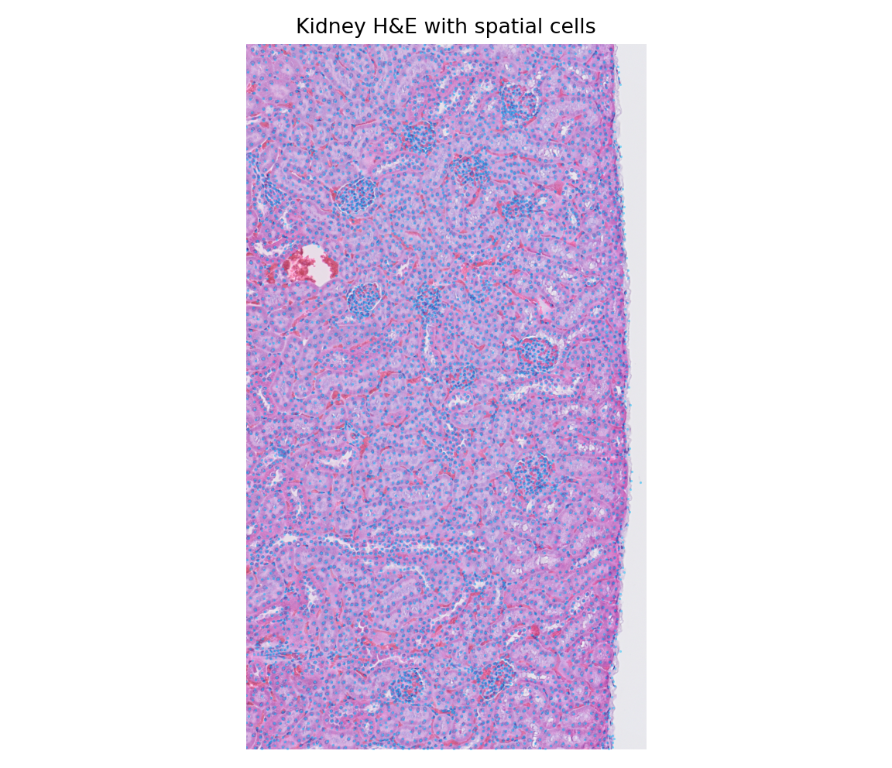
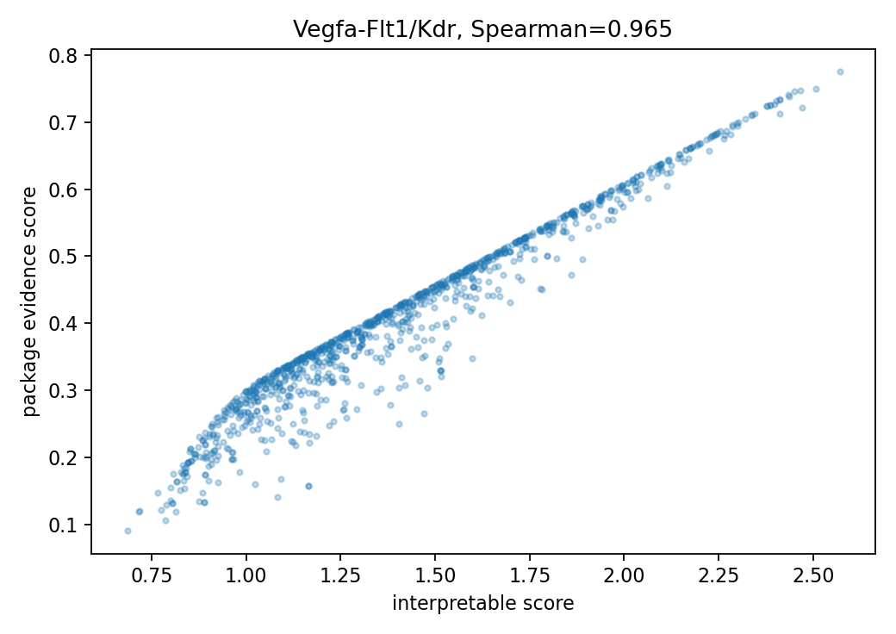
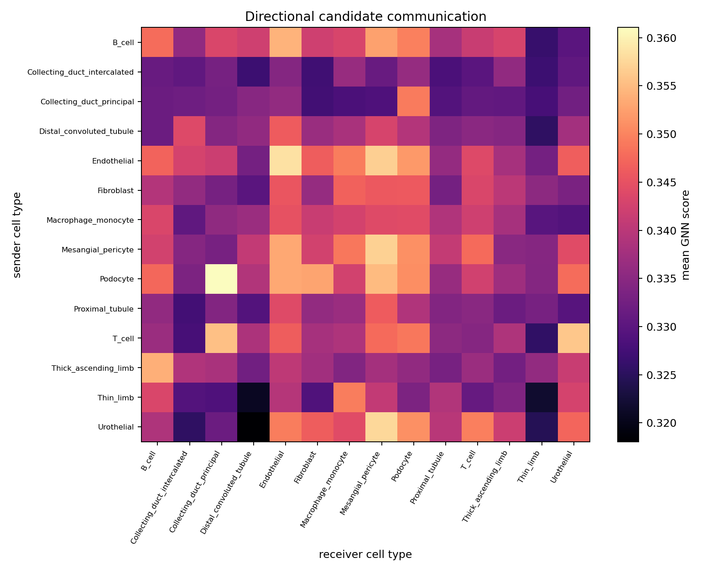
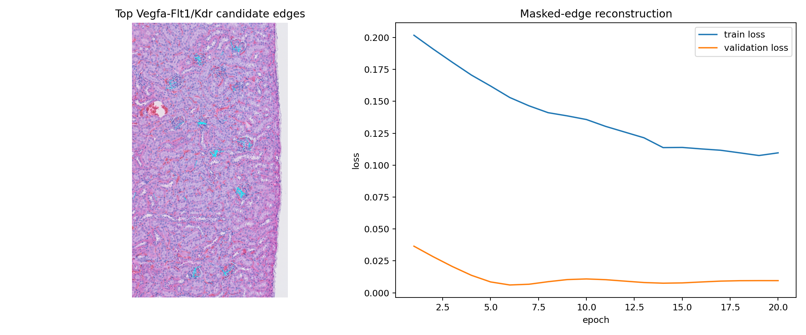

空间细胞通讯分析
空间转录组把细胞的基因表达、二维位置和组织结构放在同一份数据中。细胞通讯分析关注配体、受体、细胞位置和组织区域之间的关系，再用统计和图模型整理值得验证的候选信号。
1. 细胞间通讯的基本对象
配体是参与信号传递的分子，受体是识别配体或改变细胞状态的分子。转录组分析常把“发送细胞—配体—受体—接收细胞”写成有方向记录；方向来自发送端与接收端的表达位置和生物学假设。
分泌型信号可以在一定距离内扩散，接触依赖信号要求细胞边界相近，ECM—受体关系把细胞外基质纳入信号环境。自分泌、旁分泌和接触依赖信号的空间范围不同，距离规则应与机制和组织结构相符。
受体酪氨酸激酶、G 蛋白偶联受体和细胞因子受体通过不同的胞内通路传递信息。相同配体在不同细胞上的作用可能不同，受体亚型、共受体、下游通路和细胞状态都会影响结果。RNA 中的配体—受体共现只对应信号链入口，不能直接替代蛋白结合或功能响应。
信号还可以分为同一细胞的自分泌、邻近细胞的旁分泌、细胞膜接触和基质介导信号。配体的释放、扩散、降解、受体内吞和下游反馈共同决定作用范围；同一个配体在不同组织中的空间解释需要结合细胞状态和解剖结构。
一条完整的生物学信号链通常经历配体产生、加工或分泌、在组织中的运输、受体结合、受体构象或酶活性变化、胞内级联反应以及目标基因或细胞行为改变。转录组最直接观察的是 RNA 丰度，因此它主要提供信号链两端的分子线索。磷酸化、蛋白定位、代谢变化和细胞迁移属于另外的测量层级。
通讯具有时间尺度。细胞受到刺激后，早期反应可能先表现为受体磷酸化和转录因子活化，随后才出现 RNA、蛋白和细胞表型变化。静态切片保存的是某一时间点的空间状态，分析结果更接近候选关系的截面记录。时间序列、扰动前后样本和谱系信息能够补充信号的先后顺序。
同一组织区域还会同时存在多条信号通路。协同、竞争、负反馈和受体共享会改变单个配体—受体对的作用。细胞类型名称提供基本身份，细胞周期、缺氧、炎症和分化状态进一步决定接收细胞是否具备响应条件。
细胞通讯候选关系的证据通常来自表达、空间邻近和资源库记录。候选关系用于整理后续观察对象，蛋白定位、通路激活和因果作用还需要成像、原位检测或功能实验。
2. 空间转录组数据层级
bulk RNA-seq 把整块组织中的 RNA 混合后测量，适合比较样本总体状态；单细胞 RNA 测序把表达拆到单个细胞，却通常在组织解离时失去原来的邻居；空间转录组在测量表达的同时保留位置，使分子信号具有可核对的组织坐标。
| 数据对象 | 一个位置代表什么 | 能够支持的观察 | 需要补充的信息 |
|---|---|---|---|
| bulk RNA-seq | 整块组织或样本 | 总体表达差异、分组比较 | 细胞身份和空间邻居 |
| 单细胞 RNA-seq | 一个细胞或细胞核 | 细胞类型、状态和异质性 | 解离后的原始位置 |
| spot / bin 空间数据 | 固定网格或捕获位置 | 表达发生的组织区域 | 一个位置中的细胞组成 |
| 细胞级空间数据 | 一个分割细胞 | 细胞身份、坐标和局部关系 | 分割和注释不确定性 |
空间单位改变后，邻域、距离和统计独立性也会改变。spot 数据的邻近关系通常由网格决定，细胞级数据需要使用细胞中心或边界计算距离。Visium、MERFISH、seqFISH 和 Xenium 在捕获方式、目标基因数量、分辨率和检测灵敏度上各有取舍。
空间表达值还受到捕获效率、测序深度、组织透化、RNA 降解和背景分子的影响。总 UMI、检测基因数、组织覆盖和线粒体比例常用于质量检查，数值分布需要与组织位置一起阅读。
捕获型平台更容易出现一个位置包含多个细胞的混合信号，成像型平台通常检测预先选择的目标基因。空间分辨率、基因覆盖和灵敏度之间存在取舍，跨平台比较必须明确测量单位、组织面积和样本重复。
表达矩阵的一行需要与坐标表中的同一个 barcode 或细胞 ID 对齐。列通常对应基因，矩阵元素记录原始计数、归一化表达或其他处理值。原始计数适合保存测量来源，归一化表达适合数据集内部比较，降维表示适合可视化和模型输入；三者回答的问题不同，文件中应明确标注。
spot、bin、细胞和转录本坐标代表不同的观察单位。一个 spot 可能覆盖多个细胞，细胞级坐标依赖核或细胞边界分割，转录本坐标还会受到成像解码和背景过滤影响。空间通讯的两个端点必须与当前观察单位一致，不能在同一张边表中混用 spot 与细胞含义。
组织图像提供解剖背景和形态区域，表达矩阵提供分子测量，坐标负责把二者放在同一空间。像素坐标、阵列坐标和微米单位之间的缩放关系应保留；镜像、旋转或缩放错误会让细胞落到组织外，随后所有距离和邻域都会受到影响。
独立重复通常按动物、患者或独立组织样本计算。一个切片包含成千上万个位置，这些位置共享样本来源和制备条件。位置数量增加了空间细节，样本数量决定跨个体结论的稳定性。

概念辨析：单细胞表达同时显示配体和受体，是否可以直接称为细胞通讯
3. 配体—受体资源库与证据
CellPhoneDB、CellChatDB、OmniPath、LIANA 等工具使用的关系集合和统计定义并不相同。数据库版本、基因命名、物种映射和复合物规则都会改变候选关系数量。复合受体通常要求多个亚基同时被检测到，严格规则减少了错误匹配，也可能漏掉低丰度关系。
候选关系可以按证据层级整理：资源库是否收录该关系，发送端是否表达配体，接收端是否表达受体，两个细胞是否满足空间条件，结果是否在多个样本中重复。表达量为零、检测深度不足和细胞注释错误都可能造成假阴性。
统计方法常用置换检验、随机邻域、bootstrap 或广义线性模型估计关系的稳定性，并对大量配体—受体组合进行 FDR 校正。统计显著性描述当前数据中信号的重复程度，不能直接等同于蛋白结合强度或因果效应。
资源库中的关系还可能包含配体复合物、受体复合物、共受体和下游通路。记录证据等级时，应把文献支持、样本表达、空间邻近和功能验证放在不同字段中，避免把数据库收录误读成当前样本已经观察到。
前沿分析还会把空间蛋白组、染色质可及性和细胞状态纳入候选关系，或把配体—受体与目标基因程序联立建模。增加模态后，数据单位、样本匹配和缺失机制也随之增加，关系定义需要写在分析方案中。
复合配体和复合受体需要特别处理。若受体由多个亚基共同构成，单独检测到其中一个亚基只说明部分条件存在；严格方法常使用所有亚基表达的最小值或逻辑与规则。共受体、抑制性受体和可溶性受体还会改变方向与强度，资源库是否记录这些关系会直接影响结果。
人和小鼠的基因符号、同源基因和蛋白命名并不完全一致。跨物种映射时需要保留原始符号、映射表和未成功映射的关系。把人类数据库直接用于小鼠数据会遗漏物种特异关系，也可能把一对多同源基因压成错误的一对一关系。
资源库提供已知关系的搜索范围，当前样本决定哪些关系具有表达和空间证据。数据库规模更大时，检验数量随之增加，多重校正更严格；数据库更小则更容易漏掉新关系。比较工具时应同时比较其问题定义、背景集合、复合物处理和统计单位。
| 证据层级 | 常见数据 | 主要含义 |
|---|---|---|
| 知识证据 | 配体—受体资源库、通路文献 | 该分子关系已有生物学背景 |
| 样本证据 | RNA、空间位置、细胞状态 | 当前组织具备部分发生条件 |
| 响应证据 | 目标基因、磷酸化、蛋白定位 | 接收端出现与通路相符的变化 |
| 功能证据 | 阻断、敲除、加药或共培养 | 改变该信号会改变预期表型 |
整理结果时应保留资源库版本、基因映射、复合物规则、统计检验和多重校正方式，便于不同分析之间比较。
4. 表达预处理与质量控制
原始表达表是“空间单位 × 基因”的计数矩阵。不同细胞或位置的文库大小不同，直接比较原始计数会把测序深度差异误当成表达差异。常见流程先校正文库大小，再进行 log1p 变换，使同一数据集内的相对表达更容易比较。
高变基因帮助节点表示保留组织差异，配体—受体相关基因保证候选筛选能够看到分子条件。PCA 等降维方法把许多基因压缩成较少的连续特征，但降维表示仍然受基因选择、批次和质量控制影响。
质量控制需要同时查看数值分布和空间位置。低 UMI、检测基因少、线粒体比例高、组织外背景和双细胞都可能影响细胞类型注释。环境 RNA 会把游离转录本带入邻近位置，空间边缘和组织透化差异也会改变候选关系。
空间预筛选通常先建立半径邻域或 k 近邻，再要求配体和受体满足检测条件。距离衰减可以表达相对空间权重，共表达或联合表达可以表达分子证据；阈值需要结合平台灵敏度、组织密度和候选关系数量报告。
批次校正、环境 RNA 去除和细胞分割会影响后续邻域图。校正方法需要在不抹去真实组织区域差异的前提下使用，并保留原始计数、校正参数和质量阈值，便于回看某条候选边的来源。
低计数中的零值有两种常见来源：细胞确实很少表达该基因，或分子存在却没有被捕获。简单的“表达大于零”规则容易漏掉低丰度关系，过度填补又会制造原始数据中没有的表达。实践中常结合检测比例、细胞群平均表达、伪 bulk 汇总和灵敏度分析评估结果稳定性。
细胞类型注释通常来自聚类、marker 基因、参考映射和组织位置。粗粒度注释适合比较主要细胞群，细粒度亚型能够描述更具体的状态，也需要更多细胞和更可靠的 marker。将不确定细胞单独标记、合并过小亚群并保留原始注释概率，有助于后续检查方向汇总是否依赖少量边界细胞。
批次校正的目标是减少技术差异并保留真实生物差异。样本、切片、建库批次与疾病组完全重合时，算法无法可靠地区分技术效应和组间效应。实验设计中的随机化、平衡和独立重复因此比事后校正更重要。
| 处理环节 | 需要保存的对象 | 常见检查 |
|---|---|---|
| 质量控制 | 原始计数和位置级指标 | 低计数、背景、双细胞与组织覆盖 |
| 归一化 | 规模因子和变换方式 | 深度差异是否仍主导表达 |
| 注释 | marker、参考标签和置信度 | 组织位置与分子标志是否一致 |
| 空间对齐 | 坐标、缩放和组织图 | 端点是否落在正确组织区域 |
log1p 变换适合在同一数据集内比较，数值不等于蛋白浓度。5. 空间邻域与候选关系
把空间单位看作节点，把满足邻域和分子条件的对象对看作边，就得到空间候选图。边可以记录发送端、接收端、配体、受体、距离、共表达和证据分数；节点可以记录表达背景、细胞类型和质量标记。
固定半径更接近“在某个物理范围内寻找邻居”，但组织密度变化会让不同区域的邻居数量不同；固定 k 让每个节点获得相近数量的邻居，却可能把稀疏区域较远的对象连在一起。正式分析需要写明坐标单位、邻域规则和敏感性分析。
空间自相关会让相邻节点具有相似表达，组成偏差会让细胞数量较多的类型产生更多边。比较方向时需要同时查看边数、平均分、潜在对象对比例、平均距离和样本重复。
空间统计可以使用 Moran's I、局部聚集检验和空间置换估计区域结构；但随机打乱空间位置会破坏组织结构，置换方案必须保留适当的区域或样本层级。边之间的相关性也会影响显著性和置信区间。
邻域还可以由 Delaunay 三角剖分、细胞边界接触、组织区域或学习得到的图定义。Delaunay 适合不规则细胞分布，边界接触更贴近膜结合信号，区域图适合比较肿瘤边缘、血管周围或肾小球等解剖单元。邻域定义应对应生物学问题，并用替代规则检查主要结论。
距离需要以物理单位解释。像素距离只有在缩放因子固定时才具有可比性；同样的 50 像素，在不同扫描分辨率下覆盖的组织长度不同。分泌信号还可能沿细胞外空间、血管或组织边界传播，直线距离只是一个近似变量。
候选边数量可以按潜在发送—接收细胞对数进行标准化。若 A 类细胞比 B 类多十倍，A 相关边数自然更高；每千个潜在细胞对的边率、样本内平均分和样本间重复率能够补充原始边数。组织区域也应进入分层，以免细胞组成差异替代通讯差异。
空间置换应保留分析所需的结构。整张切片随机打乱适合检验全局位置关系，区域内置换更适合控制组织分区，样本级标签置换用于组间比较。零模型改变后，显著性回答的问题也随之改变。
半径变化会改变空间邻居和候选关系的范围。示意控件只帮助理解集合变化，正式分析需固定坐标单位并记录规则。
概念辨析：图中出现三跳路径，是否说明存在三步因果信号链
6. 细胞通讯推断方法
规则筛选根据配体、受体和空间邻域生成候选集合，优点是字段清楚，结果容易追溯；统计方法通过随机邻域、置换或样本重复估计关系的稳定性；网络传播和 NicheNet 一类方法把受体下游基因或通路信息纳入响应解释。
CellPhoneDB、CellChat 等工具适合整理细胞类型之间的配体—受体方向，NicheNet 更关注配体对目标基因程序的潜在影响。不同方法回答的问题不同，比较结果时要保留候选定义、背景集合和显著性校正。
图神经网络把空间对象写成节点，把候选关系写成边，通过邻居消息聚合学习节点或边的连续表示。GraphSAGE 使用邻居表示更新节点，边门控可以让距离和分子身份调节消息权重。候选图缺少实验确认的正负标签时，可以采用遮边重建等自监督设置，但模型分数仍然是当前候选图中的相对证据。
训练和测试需要避免待预测边直接参与消息传播，空间相关性也需要进入划分和不确定性分析。图模型的深度、隐藏维度、损失权重和遮边比例属于具体实现配置，应该与模型结果一起记录。
模型比较应同时考虑规则基线、统计方法和图模型。更复杂的模型可以整合邻域信息，却也可能放大细胞注释、坐标误差和候选图偏差；没有实验确认的标签时，排序任务比“真实通讯分类”更符合证据结构。
图模型之外还可以使用矩阵分解、低秩表示、贝叶斯层级模型和因果图。它们分别强调低维结构、样本层级差异和机制假设；模型选择应由问题、样本量、独立重复和可验证输出共同决定。
| 方法路线 | 主要输入 | 典型输出 | 适合回答的问题 |
|---|---|---|---|
| 表达与规则评分 | 细胞群表达、LR 资源库 | 分子对或细胞类型得分 | 哪些已知关系在样本中具有表达条件 |
| 置换与概率模型 | 分组表达、背景集合 | 显著性、富集或后验分布 | 关系是否超出当前零模型预期 |
| 目标基因模型 | 配体、受体与响应程序 | 配体—目标基因联系 | 哪些信号更能解释接收端表达变化 |
| 空间图模型 | 表达、位置、邻域和边属性 | 节点或边的表示与排序 | 局部组织结构如何改变候选优先级 |
CellPhoneDB 偏重细胞类型之间的配体—受体统计，CellChat 进一步组织通路和网络模式，NicheNet 把配体与接收细胞的目标基因程序联系起来，Squidpy 和 LIANA 等工具可结合空间邻域或统一多种方法输出。工具名称相近，输入单位、统计背景和分数含义仍需逐项核对。
真实标签稀缺时，图模型可以使用遮边、对比学习或重建任务预训练表示。自监督目标衡量模型恢复数据结构的能力，随后仍需用独立样本、已知通路和实验结果评价生物学价值。模型越复杂，越需要与透明的表达—距离基线并列比较。
近期研究开始同时利用空间转录本、蛋白、染色质、形态和时间信息，并对配体扩散、受体占用和细胞状态建立显式模型。这些方法扩展了可用证据，也增加了配准、缺失模态和样本量要求。
7. 统计汇总、结果解释与实验验证
单细胞边适合查看局部关系，细胞类型汇总适合比较整体方向。按发送类型、接收类型、配体和受体分组后，可以计算边数、平均分数、分数总和和平均距离。热图行列方向必须在图注中写清楚。
通路富集、疾病分组、组织区域和样本重复可以把候选关系用于具体研究问题。气泡图同时展示分子对和细胞类型，水流图展示总体方向，空间候选图检查局部组织背景；图形是汇总表的可视化，统计比较应以中间表和原始字段为依据。
结果评价需要区分排序一致性、误差大小、候选集合覆盖和跨样本稳定性。单个最高分、热图亮格或显著性数值都不能单独成为结论。稳健的候选关系应对邻域半径、筛选阈值、数据库版本和细胞注释变化保持相对稳定。
研究报告还应说明生物学重复、切片批次、细胞类型注释来源、背景候选集合和多重校正方法。后续实验可以使用原位杂交、免疫共定位、受体阻断或细胞扰动验证方向，验证结果可用于更新候选关系的优先级。
跨样本整合时，可以在样本层面汇总候选关系，再使用混合效应模型或层级置换区分个体差异与细胞数量差异。把所有细胞直接合并后计算一个分数，会掩盖重复之间的不一致。
空间通讯还可以与空间蛋白组、组织形态分区和单细胞扰动数据联立分析。增加数据来源后，先统一样本和空间单位，再决定哪些证据可以合并，哪些证据只能作为独立验证。
可视化应服务于具体问题。热图适合比较细胞类型方向，气泡图适合同时展示分子对、出现频率和得分，弦图或桑基图适合概览主要方向，空间连线图适合核对组织位置。绘图前保存长表，图注写明发送端、接收端、聚合方式、分母和颜色含义。
验证可以分成四层：在独立样本中重复候选方向；使用 RNAscope 或空间蛋白检测确认两个端点的分子位置；使用磷酸化或目标基因程序观察接收端响应；通过受体阻断、基因扰动或共培养检验功能改变。每一层增加一种证据，结论的表述也相应具体。
肿瘤微环境研究常关注免疫抑制、血管生成和基质重塑，发育研究关注细胞命运与组织边界，损伤修复研究关注炎症与再生信号。相同的计算流程可以用于不同问题，候选集合、空间范围和验证方式需要根据组织机制调整。
跨样本结果宜先在每个样本内部计算，再汇总效应大小和方向一致性。病例数量有限时，报告所有样本的结果比只展示合并热图更有信息；样本增多后，可使用层级模型估计总体效应与个体差异。
8. 小鼠肾脏数据与图模型
ccc_cells.csv 的一行对应一枚细胞，包含细胞 ID、X/Y 坐标、细胞类型和低置信度标记。ccc_edges.csv 的一行对应一条有方向关系，包含发送细胞、接收细胞、配体、受体、距离、共表达、输入证据和图网络分数。H&E 图像用于展示组织背景，坐标需要检查整体平移和上下翻转。
| 对象 | 当前材料 | 读取时的核对 |
|---|---|---|
ccc_cells.csv | 细胞坐标和注释 | ID 唯一性、坐标范围和质量标记 |
ccc_edges.csv | 高分候选关系 | 发送/接收方向、配体受体字段和筛选范围 |
ccc_kidney_he.png | 肾脏组织背景 | 坐标叠加后的组织边界和密度 |

当前图模型使用 Edge-Gated GraphSAGE：三层消息聚合根据边的距离、共表达和配体—受体身份计算门控权重，再用残差连接、LayerNorm 和 dropout 稳定节点表示。遮边重建把部分训练边隐藏，解码器输出连续证据分数；隐藏维度、遮边比例、损失权重和训练轮次属于这套模型的实现配置。
9. 肾小球案例与保存结果
肾小球案例从预测表中筛选 ligand = Vegfa、receptor ∈ {Flt1, Kdr}，完整结果包含 2,889 条候选边，精简材料保留 1,077 条案例边。重点方向是 Podocyte → Endothelial，同时保留其他方向作为参照。


遮边测试的 MSE 为 0.01263，MAE 为 0.08899，Spearman 相关为 0.5704，Top 10% 重合召回为 0.3118。这些数字描述当前候选图、遮边规则和数据划分中的重建能力，不能换算成真实通讯发生概率。

低置信度细胞集中在高分边附近时，应把质量标记加入分层统计，并检查去除或重新注释后方向是否仍然存在。肾小球结构可以帮助判断组织背景，分数和位置仍需独立切片、蛋白共定位和功能实验验证。
10. 实践项目：空间细胞通讯分析
页面中的图像、流程图和示意结果用于阅读概念；代码运行、训练时间和个人结果请在 Kaggle Notebook 中完成。打开题目 Notebook 后复制到自己的账户，再按单元格填写和运行。
读取细胞表、候选边表和 H&E，输出细胞数、类型数、候选边数、LR 对数和低置信度比例，并叠加坐标。
筛选 Vegfa–Flt1/Kdr，计算 log1p 共表达与距离衰减分数，比较它与 evidence_score 的排序关系。
按发送和接收细胞类型汇总平均 gnn_score 与边数，绘制有方向热图并说明行列含义。
绘制高分局部候选边，查看训练曲线与遮边测试指标，写出模型结果支持的判断和仍需的验证。
空间连线图只显示便于阅读的候选边子集；分析时先核对完整边表，再绘制局部高分关系。
每项任务都应保存输入核对、核心计算、结果图和边界说明；完成后再打开实践项目参考答案核对实现与解释。
材料入口：打开实践项目 查看实践项目参考答案
资料来源与延伸阅读
下列资料用于核对数据对象、方法名称和研究背景。本页图像、指标与实践项目参考答案使用同一数据范围。
- 项目源码包中的
docs/01_CCC概念入门.md、docs/02_数据与预筛选.md和docs/03_遮边自监督图模型.md。 - 项目源码包中的四个下游实验说明：空间候选通讯、细胞类型方向、LR 对×方向和 Vegfa–Flt1/Kdr 案例。
- Squidpy 文档：空间数据对象、邻域图和空间统计。
- CellPhoneDB 相关方法说明：配体—受体候选关系的统计解释。
阅读论文或官方文档时，优先关注数据单位、评价对象和结果边界，再把相同概念放回当前项目的数据表和图像中。